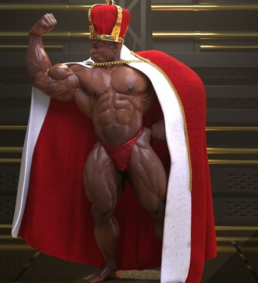

Open

Se remonta a la epoca de 1930 y es la competicion tradicional en la que se juzga los hombres por la cantidad de masa,definicion y simetria que aportan al escenario
.Es una competicion abierta y sin pruebas .En esta division no se puede ser ¨demasiado musculoso ¨
light weight